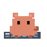
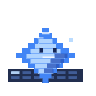
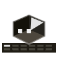
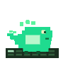
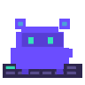

01 // attention-first UI
Stay compact until a session demands a decision.
The UI remains quiet until approvals, follow-up questions, review prompts, completions, or failures need a real response.
macOS notch control surface // live agent ops
Ping Island turns Claude Code, Codex, Gemini CLI, OpenCode, Cursor, Qoder, CodeBuddy, and Copilot interruptions into a native Dynamic Island-style panel with approvals, replies, completions, and one-click return to the right terminal or IDE.








system modules
01 // attention-first UI
The UI remains quiet until approvals, follow-up questions, review prompts, completions, or failures need a real response.
02 // act from the notch
Ping Island keeps the action loop inside a native surface so you do not have to chase a hidden terminal tab to unblock the run.
03 // focus return
iTerm2, Ghostty, Terminal.app, tmux panes, and VS Code-style IDEs all route back through one control layer.
04 // codex aware
Codex is not bolted on. Ping Island monitors both hook traffic and live app-server state so active sessions stay coherent.
05 // custom signals
Tune the app to your own workflow with event-specific sounds, imported packs, and animated mascot overrides.
06 // open source
Ping Island is an open-source alternative for people who want a local macOS control surface instead of another web dashboard.
terminal behavior

native intervention layer
Approvals, input requests, and follow-ups surface with enough context to act immediately, then route you back to the right workspace only when you need full-screen control.
supported clients

deployment path
release path
Ping Island.app into Applications.source path
git clone https://github.com/erha19/ping-island.git
cd ping-island
xcodebuild -project PingIsland.xcodeproj \
-scheme PingIsland \
-configuration Release build